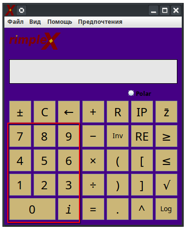
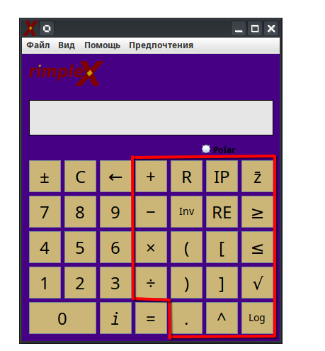
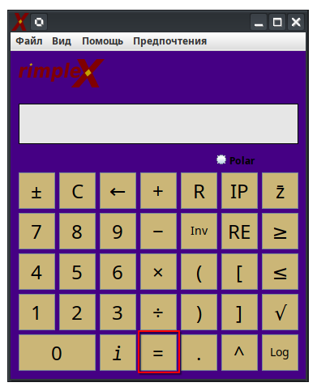
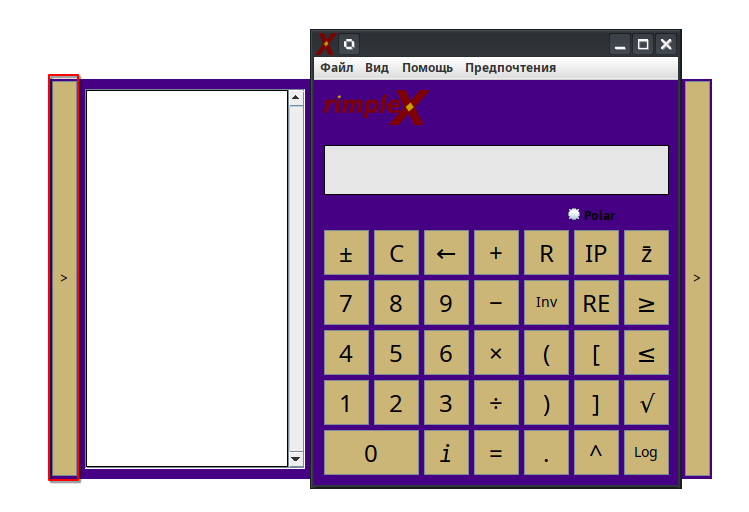
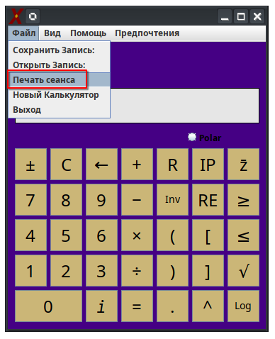
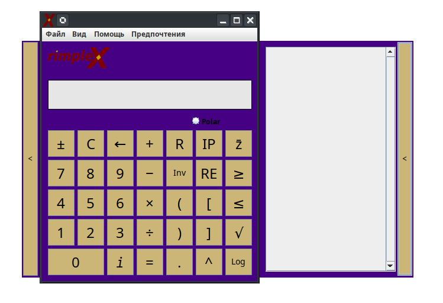
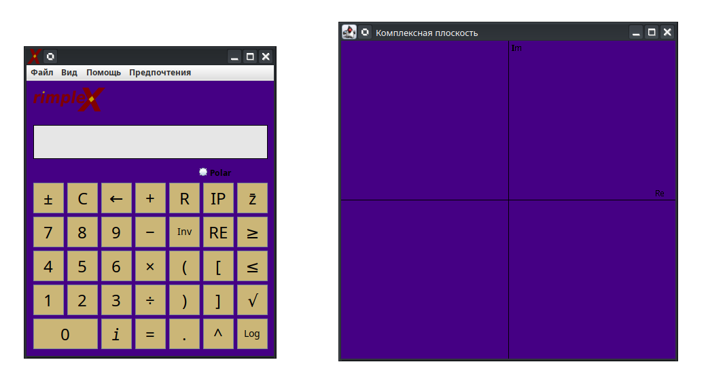
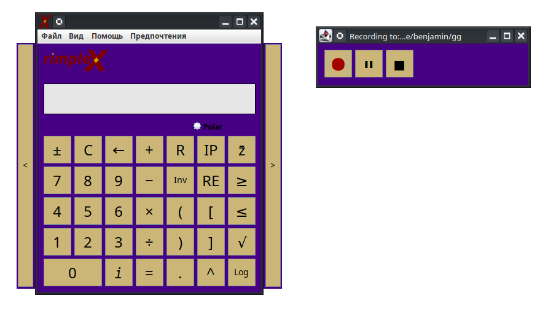
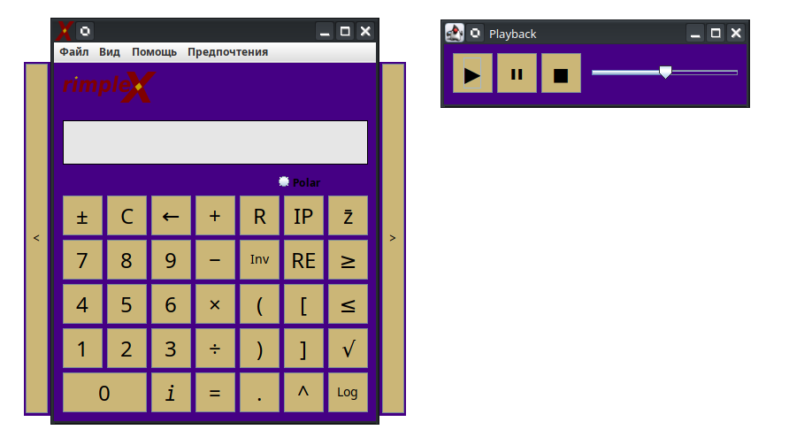

Справочная документация RimpleX
Ввод чисел в калькулятор:
Числа можно вводить, нажимая на экранные кнопки или соответствующие клавиши на клавиатуре.

Ввод операций в калькулятор:
Операции можно вводить, нажимая на значки на экране или соответствующие клавиши на клавиатуре.

Обозначения:
- Смена знака - ± - Изменяет знак текущего операнда.
- Очистить - C - Очищает текущий операнд.
- Удаление - ← - Удаляет последний символ в операнде.
- Сложение - + - Запускает операцию сложения.
- Вычитание - − - Запускает операцию вычитания.
- Умножение - × - Запускает операцию умножения.
- Деление - ÷ - Запускает операцию деления.
- Сброс - R - Очищает текущий операнд и предыдущее вычисление/уравнение.
- Обратное значение - Inv - Инвертирует текущий операнд.
- Скобки - (/) - Вставляет скобки в операнд.
- Десятичная точка - . - Вставляет десятичную точку в операнд.
- Мнимая часть - IM - Показывает мнимую часть уравнения.
- Действительная часть - RE - Показывает действительную часть уравнения.
- Полярная форма - Polar - Показывает полярную форму уравнения.
- Сопряжённое число - z̄ - Показывает сопряжённое число уравнения.
- Степень - ^ - Вставляет степень в операнд.
- Квадратный корень - √ - Вставляет операцию извлечения квадратного корня в операнд.
- Логарифм - Log - Вставляет операцию логарифма в операнд.
- Больше или равно - ≥ - Сравнивает текущий операнд.
- Меньше или равно - ≤ - Сравнивает текущий операнд.
Выполнение вычислений:
Нажмите клавишу "=" на клавиатуре или экране, чтобы выполнить вычисление текущего уравнения, отображаемого слева на экране.

Просмотр истории сеанса:
Нажатие на панель слева позволяет открыть или скрыть историю сеанса.

Печать истории сеанса:
Нажмите "Файл" на панели инструментов, затем нажмите "Печать сеанса".

Просмотр промежуточных шагов:
Нажатие на панель справа позволяет открыть или скрыть промежуточные шаги.

Визуализация комплексных чисел на комплексной плоскости:
Нажмите "Вид" в выпадающем меню и выберите "Комплексная плоскость", если на экране отображается допустимый результат — откроется новое окно с плоскостью.

Сохранение записи:
Нажмите "Файл" в выпадающем меню и выберите "Сохранить запись", чтобы открыть окно записи.

Воспроизведение записи:
Нажмите "Файл" в выпадающем меню и выберите "Открыть запись", чтобы открыть окно воспроизведения.
